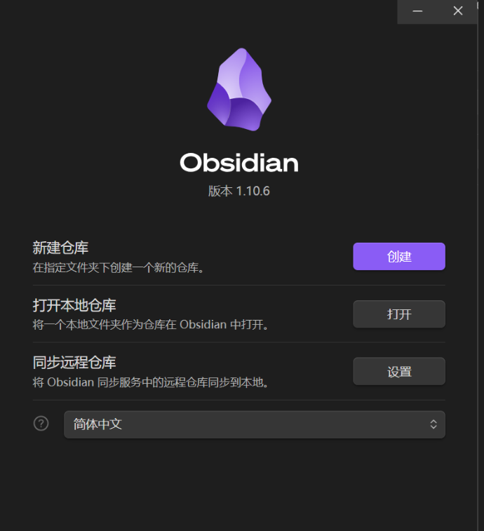
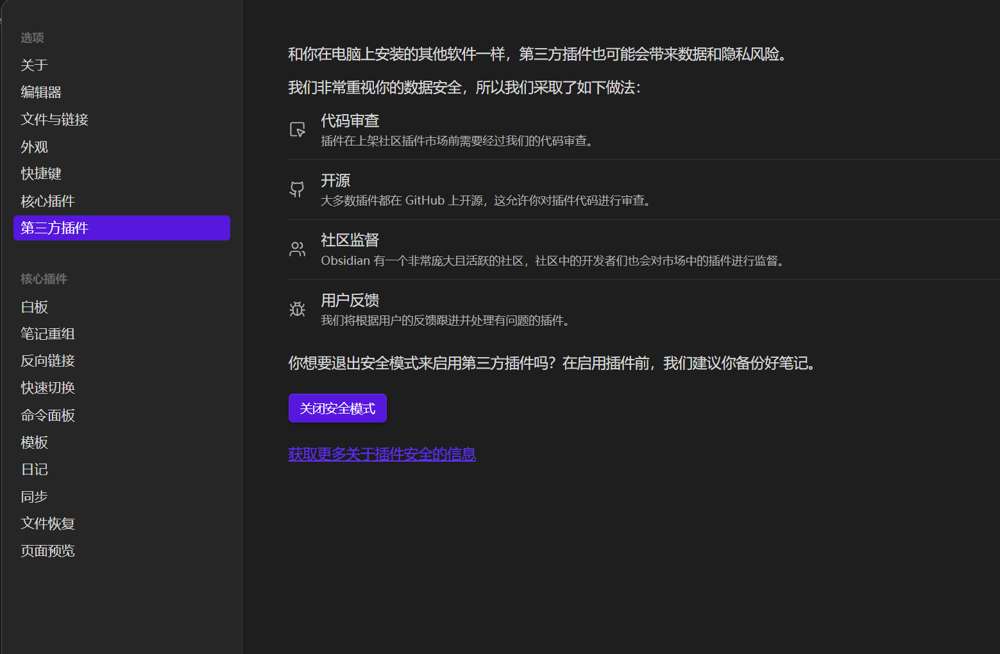
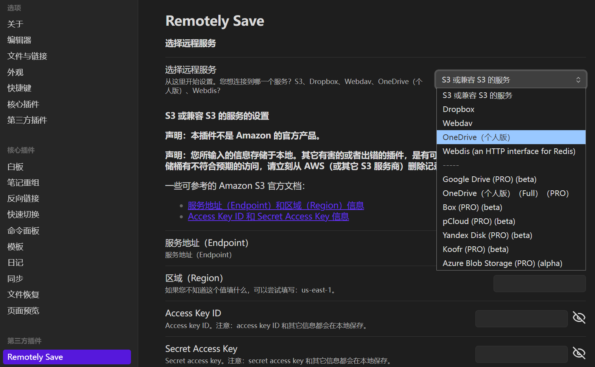
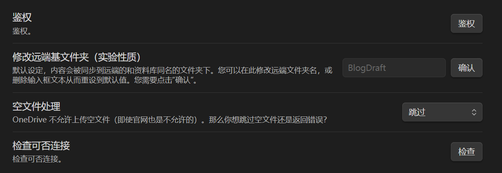
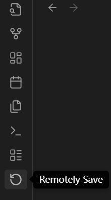

Obsidian+Remotely Save+OneDrive实现多端笔记同步
使用Obsidian Sync实现多端同步要订阅会员，最近在校园博客上刷到了使用NextCloud实现多端同步的帖子，但手上没有闲置的Linux服务器，而且想用一个更容易上手的方案，于是开始尝试使用OneDrive实现同步。
Obsidian的一个好处就是具有大量的第三方插件，极大地丰富了其功能，如Remotely Save支持Amazon S3, OneDrive for personal, Google Drive, Webdav等。而OneDrive个人版相对而言可能最容易上手。
Remotely Save 暂不支持OneDrive for Business
电脑端（主要端）准备
Obsidian可以直接去官网下载对应版本，OneDrive在Win11已经预装，其它系统需要下载。
进入Obsidian，可以新建一个文件夹或者选择已有文件夹作为Vault(仓库)

设置找到第三方插件，先关闭安全模式，再搜索Remotely Save进行下载 *(可能需要网络加速)*，

远程服务选择OneDrive

点击鉴权，再点击跳出的链接进入浏览器进行OneDrive身份验证，之后再跳转回Obsidian等待鉴权成功（右上角有提示）。然后点击下方的检查验证是否能连接上OneDrive。

有关密码和保存相关设置可以依需求而定
==第一次同步前将仓库内的内容进行备份!==
然后点击左边的Remotely Save 即可同步至OneDrive

同步后进入电脑C:\Users\你的名字\OneDrive\Apps\remotely-save下，可以看到我们刚同步的内容
如果没有就返回OneDrive目录下看看“个人保管库”是否正常开启
其他端准备
这里我用的是安卓平板，其他设备也应该差不多
ℹ️如果我们要在这里显示在别的设备同步的内容，需要创建一个同名的仓库
Remotely Save 会把每一个 vault 当成一个独立分区，vault 名需要对应远端文件夹名字，否则它会当成新库而不是继续同步。
同样的方式安装好Obsidian和Remotely Save插件并配置好OneDrive信息
⚠️如果你刚进入的时候创建了同名的Vault，这时不要点击同步，否则会覆盖掉已同步内容
等待一会或者重启软件，之后可以看到在上个设备同步内容出现在列表
注意事项
1、插件等设置是对每个Vault而言的，因此如果我们再建一个Vault并要同步的话，就要重新安装插件
2、不要在多个设备端同时编辑和同步，会造成同步错乱
3、由于OneDrive使用个人账号且同步较慢，加上普通用户只有5G的云空间，只适合个人小规模使用